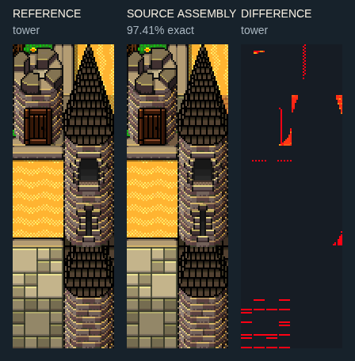
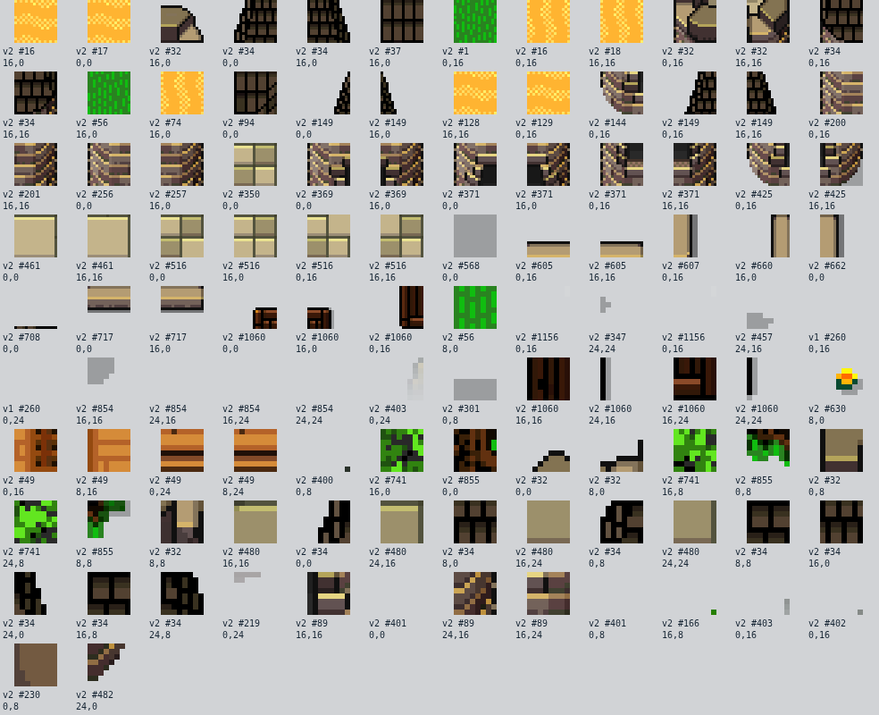
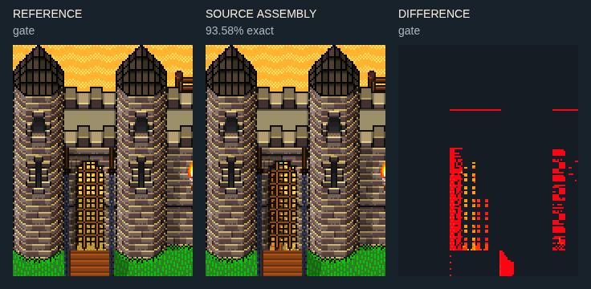
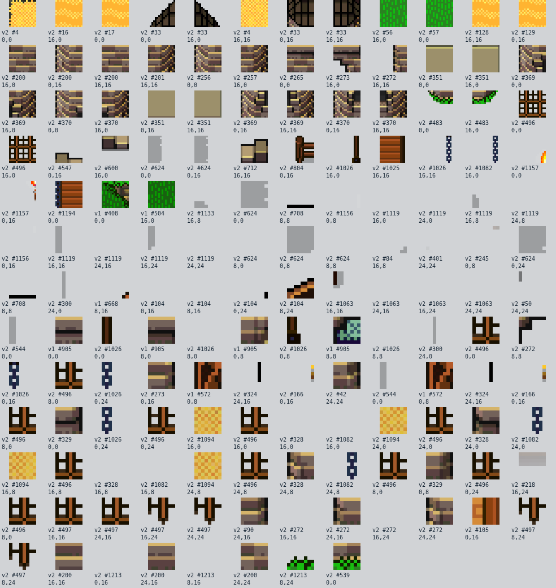
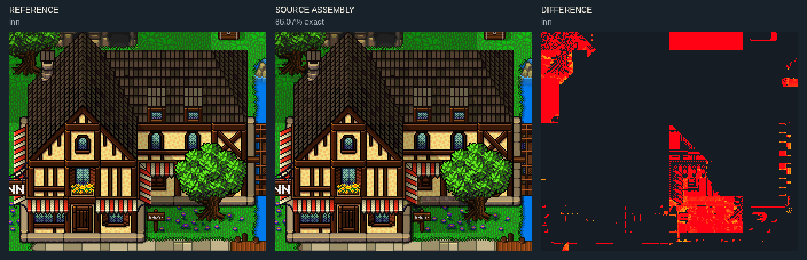
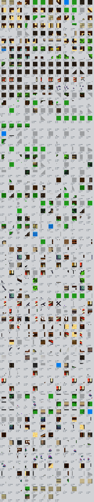

정확한 부품 → 조립 → 제한
projecting-house · 112×192px · partial
집 몸체는 확인했으나 오른쪽 기단 바깥 그림자에 차이가 남는다.
뒤 지붕 면, 중앙 돌출 박공, 상층 창, 돌출 받침, 아래 문과 기단을 차례로 읽는다. 옆 간판은 벽보다 바깥에 붙는다. 지붕 폭을 늘리는 것과 지붕 깊이를 늘리는 것은 다르다. 한 개 삼각형으로 대체하지 않는다.
정확한 288개 원본 사각형과 대상 좌표: slates-assembly-exercises.json → examples[id=projecting-house].operations. 표본의 배경을 제거·교체하고 실루엣과 충돌을 별도로 저작한다.
joined-shops · 208×192px · reference-context
원본 조립 문맥과 남은 차이를 비교판에서 확인. 독립 가변 템플릿 인증은 아님.
집의 몸통과 지붕 높이를 어긋나게 연결한다. 차양·꽃 창·간판이 각 점포의 입구를 구분한다. 왼쪽 끝 건물은 원본 화면에서 잘려 있다. 연결부 연구용이며 독립 완성 건물은 아니다.
정확한 456개 원본 사각형과 대상 좌표: slates-assembly-exercises.json → examples[id=joined-shops].operations. 표본의 배경을 제거·교체하고 실루엣과 충돌을 별도로 저작한다.
wall · 128×80px · reference-context
원본 조립 문맥과 남은 차이를 비교판에서 확인. 독립 가변 템플릿 인증은 아님.
뒤 흉벽·위 보행면·앞 흉벽·수직 벽면을 네 띠로 구분한다. 가로 반복은 가운데 면만 늘린다. 흉벽의 기둥/홈 조각을 보행면 전체에 반복하면 빈틈과 장애물이 생긴다.
정확한 87개 원본 사각형과 대상 좌표: slates-assembly-exercises.json → examples[id=wall].operations. 표본의 배경을 제거·교체하고 실루엣과 충돌을 별도로 저작한다.
parapet-corner · 160×112px · partial
위쪽 벽 뒤 바닥/그림자 접점에 차이가 남는다. 흉벽 자체와 주변 문맥을 분리한다.
끝막음·내측 모서리·전면 흉벽·석조 전면을 구분한다. 보행로 폭은 모서리에서도 유지한다. 가로 흉벽을 90도 회전해 세로 흉벽으로 대신하지 않는다. 원본의 방향별 조각을 쓴다.
정확한 246개 원본 사각형과 대상 좌표: slates-assembly-exercises.json → examples[id=parapet-corner].operations. 표본의 배경을 제거·교체하고 실루엣과 충돌을 별도로 저작한다.
tower · 64×192px · reference-context
원본 조립 문맥과 남은 차이를 비교판에서 확인. 독립 가변 템플릿 인증은 아님.


한 열짜리 원통 몸통 위에 뾰족 덮개를 얹는다. 둥근 음영은 가로 확장하지 않고 몸통만 세로 반복한다. 각 변형의 상단·기단·수면 반사가 같은 열에 섞여 있다. 모서리 탑 네 방향은 별도 확인 필요.
정확한 131개 원본 사각형과 대상 좌표: slates-assembly-exercises.json → examples[id=tower].operations. 표본의 배경을 제거·교체하고 실루엣과 충돌을 별도로 저작한다.
gate · 112×144px · hold
격자문 왼쪽과 아치 아래의 조각/겹침이 원본과 다르다. 성문 전체 자동 배치 템플릿으로 사용 금지.


탑 지붕 → 둥근 몸통 → 성벽 접합 → 문 격자 → 바닥 순서. 문 통로는 두 탑 사이의 별도 공간이다. 탑 밑을 물 반사 타일로 끝내지 않는다. 닫힌 격자문을 통행 가능으로 표시하지 않는다.
정확한 243개 원본 사각형과 대상 좌표: slates-assembly-exercises.json → examples[id=gate].operations. 표본의 배경을 제거·교체하고 실루엣과 충돌을 별도로 저작한다.
inn · 224×192px · reference-context
원본 조립 문맥과 남은 차이를 비교판에서 확인. 독립 가변 템플릿 인증은 아님.


깊은 지붕의 앞동에 낮은 옆동을 붙인다. 공통 기단 안에서 중앙 출입문, 옆 창, 차양, 간판을 배치한다. 표본에는 나무와 지면이 포함돼 있다. 옮길 때 외곽 배경까지 복사된다는 점을 구분한다.
정확한 1027개 원본 사각형과 대상 좌표: slates-assembly-exercises.json → examples[id=inn].operations. 표본의 배경을 제거·교체하고 실루엣과 충돌을 별도로 저작한다.